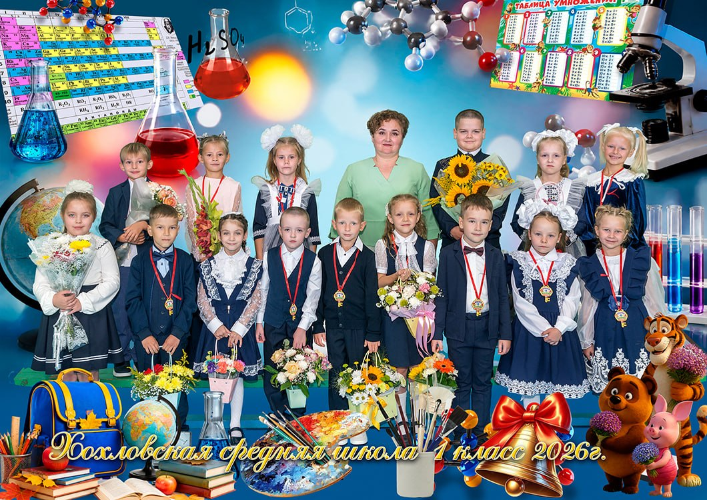

Готовим дополненную реальность…
Разрешите доступ к камере, когда телефон спросит.
📄 Наведите камеру на фотографию
(лист A4 целиком в кадре)
🔊 Коснитесь экрана, чтобы включить звук
📱 Без камеры

Камера недоступна